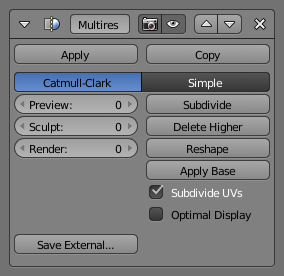

多级精度修改器¶
多级精度修改器 (通常缩写为 "Multires") 可以像 表面细分修改器 那样细分网格, 但也可以在雕刻模式中修改新的细分等级.
Note
多级精度修改器是唯一不能在栈中重新定位的修改器，这意味着在它之前要有创建或删除几何或其他对象数据（例如，所有 生成 修改器，某些 修改 和某些 模拟 修改器不能在多级精度修改器之前）.
选项¶

多级精度修改器.¶
- 类型
设置细分的类型.
- 简单型
保持当前的形状，并简单地细分边缘。
- Catmull-Clark 型
使用标准的 Catmull-Clark 细分表面算法创建一个光滑的表面，一般比原表面要小。
层级¶
- 预览
设置细分的级别，在3D视图里展示出来。
- 雕刻模式
设置将在雕刻模式里使用的细分的数量。
- 渲染
设置渲染时的细分的数量。
操作¶
- 细分
添加另一级别的细分。
- 删除较高级
删除比当前细分级别高的所有细分级别。
- 重构外形
从另一个网面复制顶点坐标。使用前先选择与之匹配的拓扑和顶点索引的不同网格的物体，然后 Shift 选择你要复制的顶点坐标的物体， 点击 重塑 。
- 应用到基型
修改原始未细分的网面，以匹配细分后的网面的形态。
更多选项¶
- 细分 UV
激活后，UV图也会细分。（例如，Blender 会添加 虚拟 坐标到所有由此修改器产生的子面）。
- 优化显示
当画该物体的线框图时，新细分边的线会略过（仅画出原始几何体的边）。
- 另存数据
保存置换数据到外部的 .btx 文件。